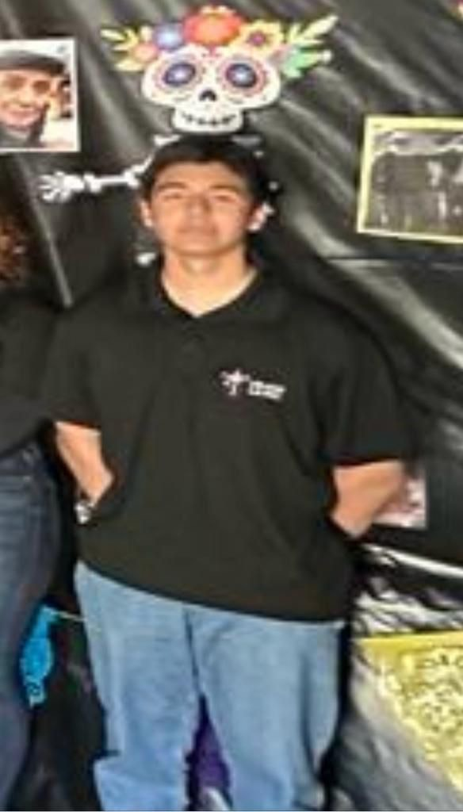
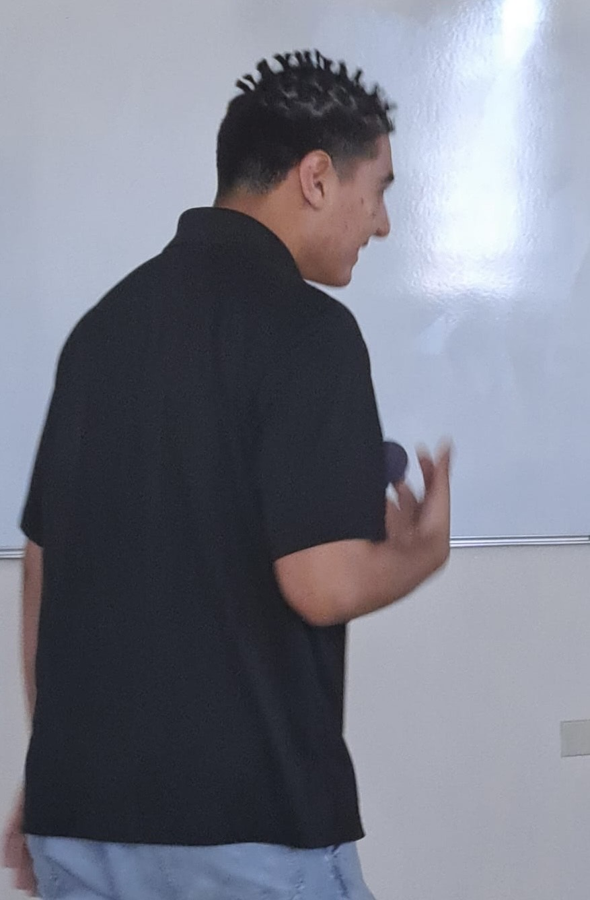
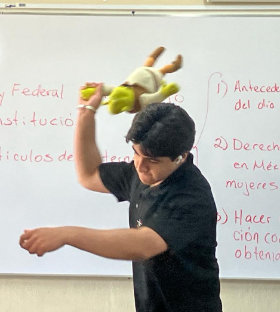

.jpg)


Andre Bustamante
AKA: Mbappe
Edad: 17
Rango: Gym Bro
Nivel de Poder: 11,000,000,000
Andre Bustamante se emergido como un coloso en la historia más reciente del 602, siendo el ápice de la excelencia futbolística dentro del combinado del 602. Su destacada destreza en el terreno de juego lo consagra como el preeminente goleador del equipo, acumulando un impresionante total de 92 tantos a lo largo de las seis temporadas disputadas en las ligas del Recreo, la local del 602 y la internacional de la Preparatoria del CLP. Considerado por muchos como el ídolo supremo de su generación, su astucia y maestría en el arte de marcar goles lo sitúan en el centro de un debate intelectual, cuestionando quién, entre él y Sebastián, ostenta una preeminencia intelectual superior. Ambos, provenientes de instituciones educativas ajenas al Colegio La Paz, exhiben destellos de un intelecto aguzado y excepcional, según los observadores del grupo. El joven de cabeza cuadrada y el Mbappé de Tijuana, como se les ha denominado cariñosamente, proyectan una imagen de superioridad intelectual que eclipsa al común de sus compañeros de aula, destacando su singular capacidad para superar la mediocridad y alcanzar las más altas cimas del pensamiento y la estrategia futbolística.
André Bustamante se alza como una figura de magnitud notable en el panorama contemporáneo del 602, sobresaliendo por su nariz distintiva de proporciones estratosféricas, la cual emerge como un faro de singularidad y esperanza en el vasto mar estudiantil del 602. Su nariz, de dimensiones majestuosas, suscita fascinación y admiración entre sus complices de aula, otorgándole un aura de distinción y refinamiento único en el seno del grupo. Además de su prominente característica facial, su versatilidad se extiende al ámbito de la moda. André se distingue por su constante cambio de cabellera, una metamorfosis capilar que despierta tanto envidia como admiración entre compañeros y profesores por igual. Desde arriesgados cortes de cabello hasta audaces estilos de moda, André se ha erigido como un ícono de la moda estudiantil, siempre a la vanguardia en la búsqueda de la autenticidad y la innovación.
Mas allá de su apariencia física, la dedicación de André al gimnasio es una faceta de su personalidad que no pasa inadvertida. Sus músculos son dignos de compararse con los del gran Geney, su más allegado camarada dentro del recinto de la musculación, donde ambos comparten rutinas y consejos para evolucionar tanto física como personalmente en sus momentos de ocio. Su devoción por el ejercicio y su incansable búsqueda de la perfección corporal lo erigen como un ejemplo de disciplina y determinación para sus fanaticos y compañeros de aula, inspirándolos a emular su trayectoria en la senda del bienestar y la excelencia personal y fisica. En Resumen, André Bustamante se destaca como una figura polifacética en el escenario del 602, donde su distintiva nariz, sus mutables estilos capilares y su entrega al gimnasio lo convierten en un ícono de singularidad, estilo y determinación, al cual todos los aficionados de la serie aspiran emular, siendo una figura pública que fascina con su desempeño tanto en el ámbito futbolístico como académico.
 602